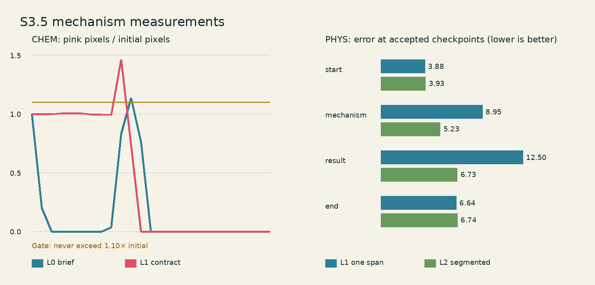

Live-Document · Stage 3 · S3.5 · 2026-07-31
什么运动能交给视频模型，什么不能
本阶段不是挑一条“看着顺”的视频，而是用同一套逐帧门禁确定最低充分引导。 结论是：连续水波用 L1 就够；液体浓度单调变化和精确刚体身份不能只靠当前首尾帧模型， 必须回退确定性程序运动。 L2 能提高中间帧吻合度，但不是自动默认。
1. 先讲清模型实际接收什么
当前部署的是 LTX‑2.3 22B First/Last‑Frame to Video。22B 表示约 220 亿参数；
FP8 checkpoint 是较低精度的模型权重文件。Gemma 文本编码器把提示词变成模型可用的向量；
LTX 的两个 LTXVAddGuide 节点只在 frame_idx=0 和
frame_idx=-1 放入首帧和尾帧。它没有原生的程序视频、对象轨迹、mask、
运动场或中间帧入口。
运动事实
对象、顺序、趋势、静止项
变成正/负文本
Guide at frame 0
文本 + 首尾图
Guide at last frame
所以 Motion Contract 不是一种隐藏的 ControlNet，也不会返回逐帧残差。它有两个用途： 一是编译更明确的语言；二是生成模型输出后逐帧验收。模型能忽略语言中的“单调” 或“对象身份”，G4 就必须拒绝。
四个引导等级
| 等级 | 模型拿到的输入 | 本阶段含义 |
|---|---|---|
| L0 | 首帧 + 尾帧 + 一句简短语言 | 语言基线 |
| L1 | 同一首尾帧 + 合同编译文本 | 对象清单、事件顺序、趋势、静止项 |
| L2 | 多个相邻 L1 首尾帧片段再拼接 | 这是分段 FLF，不冒充原生中间帧控制 |
| L3 | 程序视频/轨迹/运动场 | 当前接口不支持，禁用 |
2. 实验如何做到可复现
所有规格在模型调用前写入 motion_guidance.json， 预检见 preflight.json。CHEM 的 L0/L1 严格单变量检查为 true： 输入图片、模型、seed、采样器、分辨率、帧数和门禁逐项相同，只改变提示词。
| 固定项 | 值 | 它控制什么 |
|---|---|---|
| 模型 | LTX‑2.3 22B FP8 + distilled LoRA 0.5 | 视频生成器及加速适配权重 |
| 画面 | 576×320，24 fps | 输出像素尺寸与播放帧率 |
| guide_strength | 0.7 | 首尾图片对首尾 latent 的约束强度 |
| CFG | 1.0 | 文本条件的 classifier-free guidance 比例 |
| image_compression | 25 | 输入图在 LTX 预处理中的压缩级别 |
| noise seed | 2026073105；L2 后两段依次 +1 | 固定扩散噪声起点；不是事后抽卡 |
| 候选预算 | 每级 1 个 | 失败后不追加 seed 直到碰巧通过 |
完整 ComfyUI API 工作流、提示词和模型指纹都在每个实验目录的 _work/。
模型文件指纹不是模型名称猜测，而是实际部署文件的 SHA‑256 记录。
3. CHEM‑01：语言没有控制住浓度单调性
相邻帧从“一个粉色液滴和局部粉色羽流”到“无色溶液”。硬门禁不只看最后是否无色， 还要求粉色质量不能先增长。合同见 01_mechanism__02_result.json。
{kind=link}
{kind=link}
4. PHYS‑01：L1 已足够，L2 更准但有接缝成本
长段从 60 px 波前到 165 px 波前，两个橙色点源必须固定。合同见 00_start__03_end.json。L1 一次生成 73 帧；L2 用 00→01、01→02、02→03 三个 25 帧片段，删除重复边界帧后仍为 73 帧。
{kind=link}
{kind=link}
5. MATH‑02：首尾正确不代表四块刚体真的移动
合同要求四块三角形的颜色、面积、身份和对象局部木纹贯穿运动。合同见 00_start__01_mechanism.json。
模型在中间反复把“左侧四块”和“右侧完整拼图”闪回/融合。四种颜色最大面积偏差为 [1.0, 0.036607, 0.260371, 0.890255]，门禁是每块 ≤ 0.12。
{kind=link}
这也复现了 Stage 2 两次 LTX 刚体失败：扩散视频模型有像素连续性，但当前接口没有对象 ID、 解析面积和刚体轨迹条件。默认回退不是“模型不够好看”，而是模型没有该类硬约束。
6. 一张图看完量化结果

7. 发布给后续 Case 的确定规则
| 运动类型 | 默认 | 为什么 |
|---|---|---|
| 连续场传播 | L1 | 水波方向、固定点源和中间状态门禁全部通过；L2 没有新增机制通过项。 |
| 复杂路径且中间状态是硬合同 | L2 可选 | 只在中间帧误差显著改善、且边界跳变仍合格时升级。 |
| 液体混合/浓度单调性 | 确定性程序运动 | L0/L1 均出现中途标量反向增长。 |
| 精确刚体对象身份 | 确定性程序运动 | 模型中间丢失、融合或重生对象。 |
| 程序视频/运动场直连 | unsupported | 部署工作流没有这一输入，不能伪造。 |
机器可读版本：guidance-decisions.json； 失败回退来源与哈希：fallbacks/manifest.json。
8. 从零复现
cd /workspace/Live-Document # 1) 只做规格、输入、模型文件和工作流预检；不调用模型 /workspace/comfyui-rocm-env/bin/python -m modules.video_model.stage3.phase5 --prepare # 2) 启动已部署的 ComfyUI /persistent/ComfyUI/start-ltx2.3.sh # 3) 运行五个冻结候选；已存在的视频会保留，不重复调用 /workspace/comfyui-rocm-env/bin/python -m modules.video_model.stage3.phase5 --generate # 4) 逐帧 G4、回退清单和报告 /workspace/comfyui-rocm-env/bin/python -m modules.video_model.stage3.phase5 --audit --fallbacks /workspace/comfyui-rocm-env/bin/python -m modules.video_model.stage3.phase5_finalize # 5) 不依赖视频环境的仓库测试 /opt/venv/bin/python -m pytest -q modules/video_model/stage3/tests
9. 没有隐藏掉的限制
- G4 的水波“向外传播”量表检查总体半径和固定源，不宣称逐像素恢复完整波相位。
- L2 三段使用不同固定 seed（主 seed 依次 +0/+1/+2）；这是预先冻结的分段规格，不是失败后抽卡。
- 确定性回退目前来自程序视觉，不继承 S3.4 的完整写实材质；这是后续“全状态 B 渲染视频”的明确工程缺口。
- 本阶段只覆盖三种代表运动类型；未把结论偷换成所有十一个 Case 都已发布。
下一步已自动进入 S3.6：先做零模型跨学科发布回归，再决定是否存在新模型调用的正当理由。